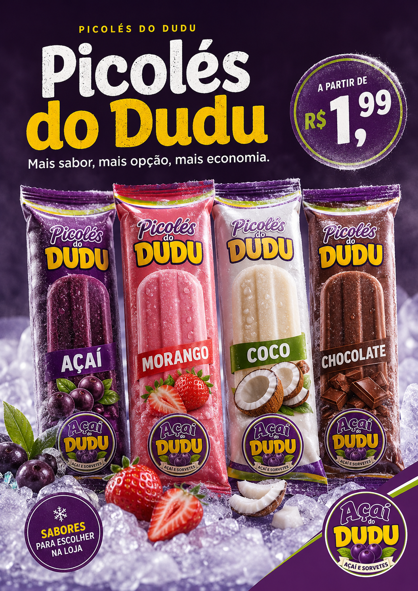

A partir de R$ 1,99

Da casa · sabores do dia
Picolés do Dudu
Opções geladas, gostosas e econômicas para refrescar o dia. Consulte os sabores disponíveis na loja.
A partir deR$ 1,99
Ver opções na loja